import numpy as np
from scipy.linalg import svd, diagsvdMatrix Product States
Introduction to MPS
- If we have a quantum system existing on L sites, with each site having d local states per site where the states of a site are denoted by \(\{\sigma_i\}\) for \(i = 1,... L\).
- For spin-1/2 , d = 2, \(\sigma = |\uparrow\rangle\) and \(|\downarrow\rangle\).
- For site i, the Hilbert space \(\mathbb{H}_i = \{|1_i\rangle, \{|2_i\rangle, ... \{|d_i\rangle \}\)
- And hence for the whole L-site quantum system the Hilbert space is \(\bigotimes\limits_{i=1}^{L} \mathbb{H}_i\)
- The system state is then given by \(|\psi\rangle = \sum\limits_{\sigma_1 ... \sigma_L} c^{\sigma_1 ... \sigma_L} |\sigma_1 ... \sigma_L\rangle\)
- The number of coefficients now scales as \(d^L\) which kinda sucks if we have big systems.
- The lowest order approximation to this is a mean-field approximation: \(c^{\sigma_1 ... \sigma_L} = c^{\sigma_1} c^{\sigma_2} ... c^{\sigma_L}\). This has favourable scaling of \(d L\) but it misses entanglement entirely. e.g., there is no way to factor the singlet state \(|\psi\rangle = \frac{1}{\sqrt{2}}(|\uparrow \downarrow\rangle - |\downarrow \uparrow\rangle\) into a product such that \(c^{\uparrow \downarrow} = c^{\uparrow} c^{\downarrow}\).
- To capture entanglement, instead of maintaining a product of scalar coefficients, we generalise to a product of matrices, \(c^{\sigma_1 ... \sigma_L} = A^{\sigma_1} . A^{\sigma_2} ... A^{\sigma_L}\)
- The system state can now be written as \(|\psi\rangle = \sum \limits_{\sigma_1 ... \sigma_L} A^{\sigma_1} ... A^{\sigma_L} |\sigma_1 ... \sigma_L\rangle\).
- Note that this decomposition is not unique : it has a gauge degree of freedom where you can plug in an \(X X^{-1}\) between any two matrices and absorb them into the A’s to get a different set of matrices : \(A^{\sigma_1} ... A^{\sigma_j} A^{\sigma_k}...A^{\sigma_L} \to A^{\sigma_1} ... A^{\sigma_j} X X^{-1} A^{\sigma_k}...A^{\sigma_L} \to A^{\sigma_1} ... M^{\sigma_j} M^{\sigma_k}...A^{\sigma_L}\). Where \(M^{\sigma_j} = A^{\sigma_j} X\) and \(M^{\sigma_k} = X^{-1} A^{\sigma_k}\).
MPS Preparation (wavefunction)
- Let us now go over how we can decompose \(c^{\sigma_1 ... \sigma_L}\) to a matrix product state \(= A^{\sigma_1} A^{\sigma_2} ... A^{\sigma_L}\). We’ll do this step-wise and see how a pattern emerges.
- Reshape 1 : If we think of the coefficients c as one giant vector indexed by a massive index of all the \(\sigma\)’s, then we can reshape the vector c into a matrix \(\Psi_{\sigma_1, \sigma_2...\sigma_L}\), basically yanking out one index \(\sigma_1\). If \(\sigma_1\) has d values then we get a stack of d vectors of size L-1, where the vectors are indexed by \(\sigma_2\) to \(\sigma_L\).
- SVD 1 : We can now perform an SVD operation on \(\Psi\) to get \(U S V^{\dagger}\) where an entry \(\Psi_{\sigma_1, \sigma_2...\sigma_L} = \sum \limits_{a_1} U_{\sigma_1, a_1} S_{a_1, a_1} (V^{\dagger})_{a_1, \sigma_2...\sigma_L}\). Why do we use SVD instead of the other billion matrix factorisation techniques? Go to Appendix A for more.
- Slicing 1 : We can take U and slice it into d row vectors : \(\{A^{\sigma_1}\}\) with \(A_{1, a_1}^{\sigma_1} = U_{\sigma_1, a_1}\) here the index “1” for A is a dummy index since each \(A\) is a row vector, so it is just the element \(a_1\) of \(A\). This will not be the case for subsequent operations.
- Now the state looks like this : \(c^{\sigma_1 ... \sigma_L} = \sum\limits_{a_1} A^{\sigma_1}_{1, a_1} c^{a_1, \sigma_2 ... \sigma_L}\) where \(c^{a_1, \sigma_2 ... \sigma_L} = S_{a_1, a_1} V_{a_1, \sigma_2 ... \sigma_L}^{\dagger}\)
- We can write a simple python code for these operations:
d = 2
L = 10
# Generate random coefficients to demonstrate use case.
c = np.random.rand(d**L)
Ψ = np.reshape(c, (d, d**(L-1)))
U, s, Vt = svd(Ψ, full_matrices=False)
# Create diagonal matrix of singular values
S = diagsvd(s, U.shape[1], Vt.shape[0])
As = []
for i in range(d):
A = U[i, :]
As.append(A)cnew = np.dot(S, Vt)
# Reconstructing coefficient vector from As and cnew to verify
ctest = np.zeros((d, d**L//2))
for i in range(d):
ctest += np.outer(As[i], cnew[i, :])
print(np.allclose(ctest.flatten(), c))
# allclose to check approximate equals, translated from julia \approx for unit tests.True- Let us continue this for one more step. So we now have \(c^{a_1, \sigma_2, ...\sigma_L}\).
- Reshape 2 : Yank \(\sigma_2\) out as a dimension to get another matrix \(\Psi_{a_1 \sigma_2, \sigma_3 ... \sigma_L}\)
- SVD 2 : \(\Psi = U S V^{\dagger}\), which means the element \(\Psi_{a_1\sigma_2, \sigma_3 ... \sigma_L} = \sum \limits_{a_2} U_{a_1 \sigma_2, a_2} S_{a_2, a_2} V^{\dagger}_{a_2, \sigma_3...\sigma_L}\)
- Slice 2 : Now we slice into matrices and not row vectors since \(a_1, a_2\) are two indices to think about, so we get \(A_{a_1, a_2}^{\sigma_2} = U_{a_1 \sigma_2, a_2}\).
- Which now means the current state of our coefficient vector is \(c^{\sigma_1, \sigma_2, ...} = \sum \limits_{a_1, a_2} A_{1, a_1}^{\sigma_1} A_{a_1, a_2}^{\sigma_2} c^{a_2 \sigma_3 ... \sigma_L}\) where \(c^{a_2 \sigma_3 ... \sigma_L} = S_{a_2, a_2} V_{a_2, \sigma_3 ...\sigma_L}^{\dagger}\)
- And we can keep doing this to the remaining parts of the coefficient until the last one.
- Let us look at a python code for step 2 as well:
Ψ2 = np.reshape(cnew, (d**2, d**(L-2)))
U2, s2, Vt2 = svd(Ψ2, full_matrices=False)
S2 = diagsvd(s2, U2.shape[1], Vt2.shape[0])
As2 = []
for i in range(d):
A = U2[(i*d):((i+1)*d), :]
As2.append(A)
cnew2 = np.dot(S2, Vt2) # In case you want to keep going
# Reconstruct and verify
Ψ_reconstr = [np.dot(A, cnew2) for A in As2]
ctest2 = np.concatenate(Ψ_reconstr).flatten()print(np.allclose(ctest2, cnew.flatten()))True- This keeps going until we finally get \(c^{\sigma_1 ... \sigma_L} = \sum \limits_{a_1} \sum \limits_{a_2} ... \sum \limits_{a_{L-1}} A_{1, a_1}^{\sigma_1} A_{a_1, a_2}^{\sigma_2}...A_{a_{L-2}, a_{L-1}}^{\sigma_{L-1}} A_{a_L, 1}^{\sigma_L} = A^{\sigma_1} ... A^{\sigma_L}\)
- Note that at the last step again similar to step 1 we have a dummy index “1” but as the second index.
- Another note : Dimensionality increases towards the centre of the product and decreases towards either end. \(a_1\) has d dimensions, \(a_2\) is \(d^2\) dimensions and so on.
- Another another note : While here we take the \(A\)’s to be the \(U\)’s of the SVD, we can always take \(A\) to be \(U(S^{\frac{1}{2}})\) and let the “residue” be \((S^{\frac{1}{2}}) V^{\dagger}\). This is more common and I will use this later on.
- Fermions, due to exchange interactions save you since d is often maxed out. For these spin-lattice models d = 2 and for the Hubbard model d = 4 (\(|0\rangle, |\uparrow\rangle, |\downarrow\rangle, |\uparrow\downarrow\rangle\)). However for systems like bosons, d can even be infinite, so you have to start thinking of truncation up to some set \(d_{max}\) which is a method parameter that you have to converge.
MPS Block Diagram Notation
There’s a block diagram notation for representing MPS’s conveniently. It’s not always clear what the diagrams mean so here is a guide on what the different chunks of these diagrams indicate and how you can use them to make life easy.
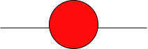
- A circle is one chunk of your matrix product state. The image above is a matrix (or a rank-2 tensor). How do I know that it’s a matrix? Because it has two legs. Each leg represents an index.
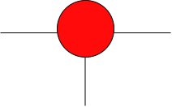
This object is a rank-3 tensor, it would take specifying 3 indices to fully get the location of an element of this tensor, e.g. \(K_{111} = 10\). In python terms \(K[0][0][0] = 10.0\).
On occassion, you might see a number on one of these legs, which is the dimension of that matrix along that particular leg.
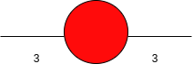
This, for example, is a 3x3 matrix.
How do we represent a matrix product state then? Let’s take two matrices and take their product. Mathematically how would you represent the product of two matrices C = AB? You have at max 3 unique indices in the beginning \(A_{ij}\) and \(B_{jk}\) (let’s say i goes from 1 to m, j goes from 1 to n and k goes from 1 to p) since A can have as many rows as B can have columns and \(C_{ik} = \sum_j A_{ij} B_{jk}\), so you only need 3 legs in total for a matrix product.
What we do to represent the fact that we store a matrix product is to connect the leg of the matrices whose index we sum over (in this example it was \(j\) since that was the common index). We represent the matrix product in this form :
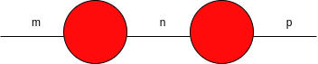
A leg shared between two matrices (or tensors) is called a “bond”. The maximum index value of the bond variable (here \(j = n\) would be the maximum value that \(j\) can take) is called the “bond dimension”.
The object that we generated from wavefunction MPS construction earlier looks like this :
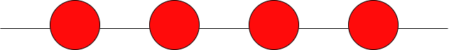
The first and last legs have unit dimension since they’re dummies.
The object we started out with (the giant c tensor) looks like this:
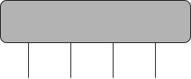
Matrix product operators (discussed later) operate on matrix product states. Mathematically, they are the same type of objects as matrix product states (in python we literally use the same class for both of them), but in standard notation, the MPOs are represented by squares. So it’s worth getting comfortable seeing this sort of thing :
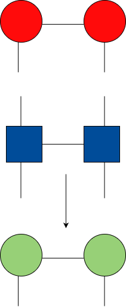
Here the MPS on top gets operated on by the MPO in the middle to produce another MPS in the bottom. The top two legs of the MPO and the bottom two legs of the red MPS are going to touch and hence the touching legs need to have the same dimensions (and then you sum over the index corresponding to that leg).
MPS Preparation (Density Matrix)
- Okay, so we showcased the basic MPS construction for a wavefunction, but we don’t really care about that, so let’s do this for a density matrix.
- Let’s take a representative system for spin dynamics : say you have 1 system spin interacting with 2 bath spins, so that’s totally just a 3-spin system.
- Initially let’s assume this 3-spin system comes in the following avatar : the system spin is in the excited state and the bath spins are thermalised at some inv-temp \(\beta\) and none of them are entangled to each other. So the state is just \(\rho_s \otimes \rho_{b1} \otimes \rho_{b2}\).
- Refer to Appendix B for \(\otimes\) and \(\oplus\) in case you’re rusty.
- There’s multiple ways you can turn this direct product of density matrices into an MPS. Here are some forms and you can convince yourself that they all represent the same thing (within a reshape of each other):
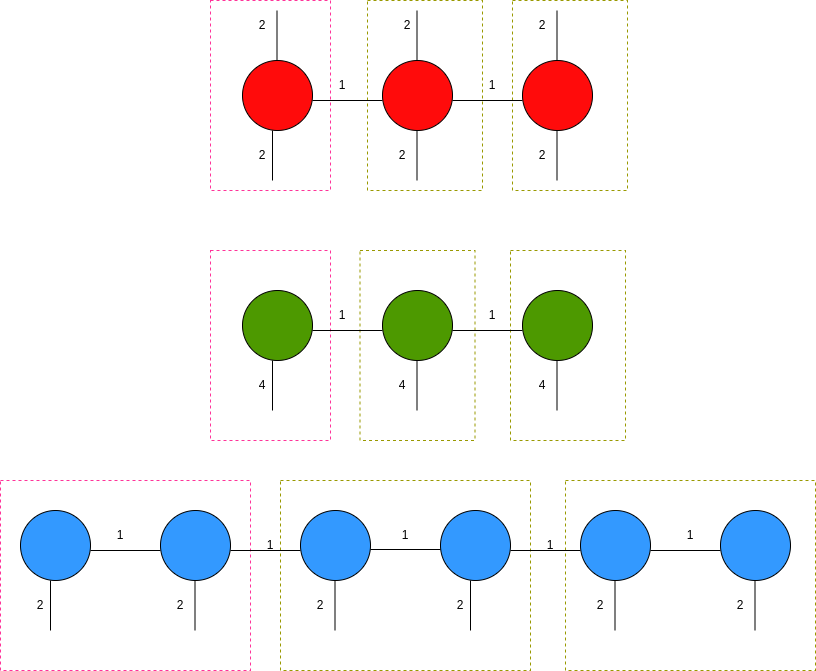
- Here I’ve showcased the MPS of density matrices in 3 avatars.
- The top (red) one is the form that is used in DMRG.
- The second form (green) has the 2x2 density matrix reshaped into a single 4x1 object. This is called the Choi-transformed representation.
- The third form (blue) is a “split” representation of the MPS. The magenta box represents the nodes and legs that correspond to the system spin and the olive boxes are the nodes and legs corresponding to each bath spin.
- Does it matter how we order the system and bath spins? This seems to be an open research question. But we will conveniently plonk the system spin in the beginning and place all the bath spins afterwards. Within the MPS formalism, entanglement seems to be encoded pairwise and captures the entire entanglement of the system.
Okay, good. So how do we actually make one of these?
Let us define some convenient params (in file params.py) that describe the relevant parameters and so on that we use for MPS construction. These are not extremely important conceptually, hopefully comments illustrate what each term is doing in case confusion arises later :
small = 1e-14 # Cutoff for SVD truncation
#mmax = 6
nb1 = 2
nb2 = nb1 # redundant, can replace all instances with nb1.
nrtt = 30 # Caps the bond dimension for the MPS in TDVP propagation.
nrmax = 1000 # Not sure what this is
nsteps = 10000
nbath = 2
nlevel = nbath*2
ndvr = 2 # System dimensions.
beta = 1.0
dt = 0.01
domega = 2.5 # No idea what this is.
eta = 0.5 # No idea what this is .
gamma = 1.0 # No idea what this is.
omega_s = 0.0 # System splitting energy.
delta = 1.0 # No idea what this is.
omega_b = np.zeros(nbath,dtype = np.float64) # Bath spin splitting energy.
eta_sb = np.zeros(nbath,dtype = np.float64) # Sys-bath coupling.
for i in range(nbath):
omega_b[i] = 1.0
eta_sb[i] = 0.5/np.sqrt(nbath) # Arbitrary definition of system-bath coupling.
# read/write pall
# write True prompts MPS construction
# read True prompts MPS propagation
read_pall = False
write_pall = False
pall_file = "pallDimer0"
# paramaters
nb = np.zeros(nlevel+2,dtype=np.int64)
nb[0] = ndvr
nb[1] = nb1
nb[2:nlevel+1] = nb2
nb[nlevel+1] = ndvr
nbmat = nb**2 # MPO bond dimension, square of bond dimensions of the MPS.
# System Hamiltonian
hsys = np.array(([omega_s/2.0,delta],[delta,-omega_s/2.0]),dtype=np.float64)
# Bath spin Hamiltonian
hbath = []
for i in range(nbath):
hbath.append(np.array(([omega_b[i]/2.0,0.0],[0.0,-omega_b[i]/2.0]),dtype=np.float64))
# Pauli matrixs
sigma_x = np.array(([0.0,1.0],[1.0,0.0]),dtype=np.complex128)
sigma_y = np.array(([0.0,-1.0j],[1.0j,0.0]),dtype=np.complex128)
sigma_z = np.array(([1.0,0.0],[0.0,-1.0]),dtype=np.complex128)
sdvr = np.array(([-1.0,1.0]),dtype=np.float64) # No idea what this is.Okay, now let’s start making the MPS. We also need an object to store the MPS (also written within the file params.py). We are going to make an MPS in the split avatar (the blue MPS in the diagram above). Python code for the object:
class Density:
def __init__(self):
# 2 nodes for each bath spin and 2 nodes for system spin in split notation.
self.nb = np.empty((nlevel+2),dtype=np.int64)
self.nodes = []
# Clone our MPS
def copy(self):
rout = Density()
rout.nb = self.nb
nlen = len(self.nodes)
for i in range(nlen):
vtmp = self.nodes[i].copy()
rout.nodes.append(vtmp)
return rout
# Get the dims of all the tensors in the MPS.
def ndim(self):
nlen = len(self.nodes)
ndim = np.empty((3,nlen),dtype=int)
for i in range(nlen):
ndim[0,i] = self.nodes[i].shape[0]
ndim[1,i] = self.nodes[i].shape[1]
ndim[2,i] = self.nodes[i].shape[2]
return ndimWe now want to store the split form of the unentangled direct product state as the initialised state of our MPS.
Start by defining the density matrix for the system \(\rho_s = \begin{pmatrix}1 & 0 \\ 0 & 0 \end{pmatrix}\)
Split the system spin into two matrices by performing an SVD: \(\rho_s \to U S V^{\dagger}\) and then storing the matrix \(U(S^{\frac{1}{2}})\) and the matrix \((S^{\frac{1}{2}}) V^{\dagger}\) as two nodes in the MPS.
Define bath spins that are defined by \(\rho_b = \text{e}^{-\beta H_b}\). Then repeat the same for the bath spins to split them and get 2 nodes for each bath spin.
Define a file init_rho.py which has the following function:
def init_rho():
# System spin splitting :
rho0 = np.zeros((ndvr,ndvr),dtype=np.complex128)
rho0[0,0] = 1.0
rhoall = Density()
u1,s1,vt1 = np.linalg.svd(rho0,full_matrices=False)
ii = 0
for i in range(1, ndvr+1,1):
if s1[i-1]> small:
ii += 1
print("rank of initial rho =", ii)
if ii==0:
sys.exit("initial density operator has rank 0, stop")
elif (ii > nrtt):
sys.exit("rank of initial density larger than nrtt, stop")
vl = np.zeros((1, ndvr, nrtt),dtype=np.complex128)
vr = np.zeros(( nrtt, ndvr, nrtt),dtype=np.complex128)
for i in range( ndvr):
for j in range(ii):
vl[0,i,j] = u1[i,j]*np.sqrt(s1[j])
vr[j,i,0] = vt1[j,i]*np.sqrt(s1[j])
rhoall.nodes.append((vl))
rhoall.nodes.append((vr))
# bath spins splitting:
for i in range( nbath-1):
rhob0 = np.zeros(( ndvr, ndvr), dtype=np.complex128)
rhob0[1,1] = 1.0/(1.0 + np.exp(- beta* omega_b[i]))
rhob0[0,0] = np.exp(- beta* omega_b[i])/(1.0 + np.exp(- beta* omega_b[i]))
u2,s2,vt2 = np.linalg.svd(rhob0,full_matrices=False)
iii = 0
for i in range(1, ndvr+1,1):
if s2[i-1]> small:
iii += 1
if iii==0:
sys.exit("initial density operator has rank 0, stop")
elif (iii > nrtt):
sys.exit("rank of initial density larger than nrtt, stop")
vtmp1 = np.zeros(( nrtt, ndvr, nrtt),dtype=np.complex128)
vtmp2 = np.zeros(( nrtt, ndvr, nrtt),dtype=np.complex128)
for j in range( ndvr):
for k in range(iii):
vtmp1[0,j,k] = u2[j,k]*np.sqrt(s2[k])
vtmp2[k,j,0] = vt2[k,j]*np.sqrt(s2[k])
rhoall.nodes.append((vtmp1))
rhoall.nodes.append((vtmp2))
vtmp1 = np.zeros(( nrtt, ndvr, nrtt),dtype=np.complex128)
vtmp2 = np.zeros(( nrtt, ndvr, 1),dtype=np.complex128)
for j in range( ndvr):
for k in range(iii):
vtmp1[0,j,k] = u2[j,k]*np.sqrt(s2[k])
vtmp2[k,j,0] = vt2[k,j]*np.sqrt(s2[k])
rhoall.nodes.append((vtmp1))
rhoall.nodes.append((vtmp2))
rhoall.nb = nb
print("length of rhoall: {}".format(len(rhoall.nodes)))
print("rhoall initialization done!")
return rhoallLet’s look at what this does :
MPS = init_rho()rank of initial rho = 1
rank of initial rho = 1
length of rhoall: 6
rhoall initialization done!MPO Preparation
- So you made an MPS. Great! No point just having it sit around so lets create some devices to poke and prod our MPS into doing something.
- This is the MPO: a Matrix Product Operator that will act on the MPS.
- Take the LvN equation for example : \(\frac{d\rho}{dt} = [H, \rho] = H \rho - \rho H\). How do we construct MPOs to do the \(H \rho\) and \(\rho H\) operations?
- Let’s take a step back and make a Hamiltonian \(H\) for the 3 spin system. Say we’re doing 3 spins in full decoherence : \(H = \frac{\omega_s}{2} \sigma_0^{z} + \Delta \sigma_0^{x} + \sum_{i=1}^{2} \frac{\omega_i}{2} \sigma_z^{i} + \sum_i \eta_i \sigma_i^{x} \sigma_0^{z}\).
- First two terms are system Hamiltonian \(H_s\). Second term is bath Hamiltonian \(H_b\) and third term is interaction \(H_I\).
- Hence the RHS of the LvN equation is going to be \(H_s \rho - \rho H_s + H_b \rho - \rho H_b\) and so on.
- Let us just consider the system terms \(H_s \rho - \rho H_s\) first.
- The MPO for the first part looks like this :
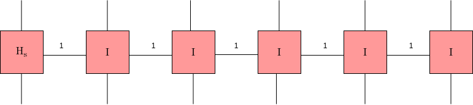
- The MPO for the second part looks like this :
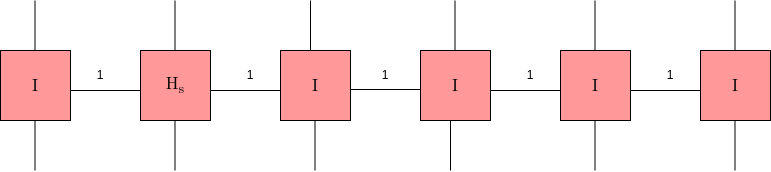
Add these two to get the effective operator for the entire system part.
My notes in Appendix B tells you why this is the case.
This is how you make an MPO for a given Hamiltonian. Let us define some utility functions first.
Code for splitting (QR and SVD) in file split.py:
Code
import scipy.linalg as lg
#=================================================================
# this do the rq split for a 3D tensor, based on (a,b,c) => (a,b*c)
# need to reshape q to 3D
def split_rq(xx):
#----------------------
y1, m, y2 = np.shape(xx)
yy = np.reshape(xx, (y1, y2*m), order='F')
r, q = lg.rq(yy, mode='economic')
q1 = np.reshape(q, (min(y1, y2*m), m, y2), order='F')
return r, q1
#=================================================================
# this do the rq split for a 3D tensor, based on (a,b,c) => (a*b,c)
# need to reshape q to 3D
def split_qr(xx):
#----------------------
y1, m, y2 = np.shape(xx)
yy = np.reshape(xx, (y1*m, y2), order='F')
q, r = lg.qr(yy, mode='economic')
q1 = np.reshape(q, (y1, m, min(y1*m, y2)), order='F')
return q1, r
#====================================================
# this is our version of the split_w_truncation function
# using svd
def split_svd_rq(xx):
#----------------------
# do the svd
y1, m, y2 = np.shape(xx)
yy = np.reshape(xx, (y1, y2*m), order='F')
u1, s1, vt1 = lg.svd(yy, full_matrices=False)
#----------------------
# find jmax
for i in range(len(s1)):
if (s1[i] < s1[0]*small):
break
jmax = i+1
if (jmax > nrmax): jmax = nrmax
#-----------------------------------
# do the truncation
u2 = u1[:, 0:jmax]
vt2 = vt1[0:jmax, :]
for i in range(jmax):
u2[:, i] *= s1[i]
q1 = np.reshape(vt2, (jmax, m, y2), order='F')
return u2, q1Code for tensor truncation (in trun.py) :
Code
#==========================================
# truncation based on the 2-sweep method
# Note, added normaliation similar to the orginal fortran code....
# also use a custom svd truncation, the one with tn may cause problems somehow
def trun_tensor(rin):
rout = Density()
rout.nb = rin.nb
nlen = len(rin.nodes)
nrm = []
#----------------------------------------------------
# QR for the first matrix
q, r = split_qr(rin.nodes[0])
rout.nodes.append(q)
# normalize
nrml = np.sqrt(np.sum(np.abs(r)**2))
#print("nrml =", nrml)
if (nrml < 1.e-3): nrml = 1.0
nrm.append(nrml)
r *= 1.0/nrml
#----------------------------------------------------
# middle ones
for i in range(1, nlen-1, 1):
rtmp = np.tensordot(r, rin.nodes[i], (1, 0))
q, r = split_qr(rtmp)
rout.nodes.append(q)
nrm.append(np.sqrt(np.sum(np.abs(r)**2)))
if (nrm[i] < 1.e-3): nrm[i] = 1.0
r *= 1.0/nrm[i]
#----------------------------------------------------
# the last one
rtmp = np.tensordot(r, rin.nodes[nlen-1], ((1), (0)))
rout.nodes.append(rtmp)
#----------------------------------------------------
# the real truncation from the right
rin = trun_tensor_right(rout)
#----------------------------------------------------
# get the renormalization factors back
nrml = np.sum(np.log(nrm))
nrml = np.exp(nrml/nlen)
for i in range(nlen):
rin.nodes[i] *= nrml
return rin
#==============================================
def trun_tensor_right(rin):
#print("trun_right, shape of rin",rin.ndim())
rout = rin.copy()
nlen = len(rin.nodes)
#----------------------------------------------------
# split useing svd, the right matrix
u1, vt = split_svd_rq(rin.nodes[nlen-1])
#can not use u and vt directly, some issues with dangling edge
rout.nodes[nlen-1] = vt
#----------------------------------------------------
#intermediate terms
for i in range(nlen-2, 0, -1):
rtmp = np.tensordot(rin.nodes[i], u1, ((2), (0)))
u1, vt = split_svd_rq(rtmp)
# can not use u and vt directly, some issues with dangling edge
rout.nodes[i] = vt
#----------------------------------------------------
# the left matrix
rtmp = np.tensordot(rin.nodes[0], u1, ((2), (0)))
rout.nodes[0] = rtmp
#print("shape of rout",rout.ndim())
return routCode for adding MPO tensors (in add_tensor.py) :
Code
import copy as cp
# note, coeff only applies to the first node
def add_tensor(r1, r2, coeff):
rtmp = Density()
rtmp.nb = r1.nb
nlen = len(r1.nodes)
type_r1 = r1.nodes[0].dtype
type_r2 = r2.nodes[0].dtype
if (type_r1 != type_r2):
print("r1 and r2 has different type, not supported yet")
sys.exit(1)
#=============================================
# the left matrix, we should have m1=m2=1 here
m1 = r1.nodes[0].shape[0]
n1 = r1.nodes[0].shape[2]
m2 = r2.nodes[0].shape[0]
n2 = r2.nodes[0].shape[2]
jj = n1+n2
# combine data
vtmp = np.zeros((1, r1.nb[0], jj), dtype=type_r1)
vtmp[0, :, 0:n1] = r1.nodes[0][0, :, :]
vtmp[0, :, n1:jj] = coeff*r2.nodes[0][0, :, :]
# add to the nodes
rtmp.nodes.append(vtmp)
#================================================
# add all the intermediate matrices
for i in range(1, nlen-1):
m1 = r1.nodes[i].shape[0]
n1 = r1.nodes[i].shape[2]
m2 = r2.nodes[i].shape[0]
n2 = r2.nodes[i].shape[2]
ii = m1+m2
jj = n1+n2
# combine data
vtmp = np.zeros((ii, r1.nb[i], jj), dtype=type_r1)
vtmp[0:m1, :, 0:n1] = r1.nodes[i]
vtmp[m1:ii, :, n1:jj] = r2.nodes[i]
# add to the nodes
rtmp.nodes.append(vtmp)
#=============================================
# the right matrix, we should have n1=n2=1 here
m1 = r1.nodes[nlen-1].shape[0]
n1 = r1.nodes[nlen-1].shape[2]
m2 = r2.nodes[nlen-1].shape[0]
n2 = r2.nodes[nlen-1].shape[2]
ii = m1+m2
# combine data
vtmp = np.zeros((ii, r1.nb[nlen-1], 1), dtype=type_r1)
vtmp[0:m1, :, 0] = r1.nodes[nlen-1][:, :, 0]
vtmp[m1:ii, :, 0] = r2.nodes[nlen-1][:, :, 0]
# add to the nodes
rtmp.nodes.append(vtmp)
#===========================================
# truncate the new tensor
rtmp = trun_tensor(rtmp)
return rtmpNow, we can look at code for MPO construction (construct.py):
- Initially, the MPO is initialised in the same object as the MPS with all the MPS set to the identity.
- Then a call is made to a function (delta_all5) that adds a bunch of tensors that makes an object “drho” that keeps getting relevant terms added it to it until it finally represents the completed MPO object.
- First the system Hamiltonians “hsys” are added in the manner we described above. The tensors are shaped in a “stacked” way rather (1,\(\text{ndvr}^2\), 1) dimensions rather than (1, ndvr, ndvr, 1) as we might expect. This is some convenient representation, not sure why.
- Then the bath terms (hbath) are added to the indices corresponding to the bath spins.
- Then the spin-bath coupling terms are added, where you have an MPO with the \(\eta_i \sigma^{z}_0\) in the positions corresponding to the system spin(?) and then an MPO corresponding to \(\sigma^x_i\) in the positions corresponding to the bath spins(?).
- I’m still a bit confused here, once I’m clear I will draw a picture of the MPOs for the spin-bath interaction terms.
def construct():
p0 = Density()
p0.nb = nbmat
# vl and vr
vl = np.zeros((1, ndvr*ndvr, 1), dtype=np.complex128)
vr = np.zeros((1, ndvr*ndvr, 1), dtype=np.complex128)
for i in range(ndvr):
ii = i*ndvr+i
vl[0, ii, 0] = 1.0
vr[0, ii, 0] = 1.0
# vmid
vmid = []
for i in range(nbath*2):
vtmp = np.zeros((1, ndvr*ndvr, 1), dtype=np.complex128)
for j in range(ndvr):
ii = j*ndvr+j
vtmp[0, ii, 0] = 1.0
vmid.append(vtmp)
# add to p0.nodes
p0.nodes.append(vl)
for i in range(nbath*2):
p0.nodes.append(vmid[i])
p0.nodes.append(vr)
print('len of p0', len(p0.nodes))
print("p0 calculation done!")
rout = delta_all5(p0)
return rout
#==========================================================
def delta_all5(rho):
drho = rho.copy()
rtmp1 = rho.copy()
nlen = len(rho.nodes)
#========================================================
# the central spin Hamiltonian terms:
vl1 = np.zeros((1, ndvr*ndvr, 1), dtype=np.complex128)
vl2 = np.zeros((1, ndvr*ndvr, 1), dtype=np.complex128)
for i in range(ndvr):
for j in range(ndvr):
ii = j*ndvr + i
vl1[0, ii, 0] = -1.0j*hsys[i, j]
vl2[0, ii, 0] = 1.0j*hsys[j, i]
drho.nodes[0] = vl1
rtmp1.nodes[1] = vl2
drho = add_tensor(drho, rtmp1, 1.0)
print("after hsys, shape of rout", drho.ndim())
#========================================================
# the bath spins Hamiltonian terms:
for i in range(nbath):
rtmp1 = rho.copy()
rtmp2 = rho.copy()
vtmp1 = np.zeros((1, ndvr*ndvr, 1), dtype=np.complex128)
vtmp2 = np.zeros((1, ndvr*ndvr, 1), dtype=np.complex128)
for j in range(ndvr):
for k in range(ndvr):
ii = k*ndvr + j
vtmp1[0, ii, 0] = -1.0j*hbath[i][j, k]
vtmp2[0, ii, 0] = 1.0j*hbath[i][k, j]
rtmp1.nodes[2+2*i] = vtmp1
rtmp2.nodes[3+2*i] = vtmp2
drho = add_tensor(drho, rtmp1, 1.0)
drho = add_tensor(drho, rtmp2, 1.0)
print("after hbath, shape of rout", drho.ndim())
#========================================================
# the spin-bath coupling Hamiltonian
for i in range(nbath):
rtmp1 = rho.copy()
rtmp2 = rho.copy()
# H \rho for qubit part
vtmp11 = np.zeros((1, ndvr*ndvr, 1), dtype=np.complex128)
# \rho H for qubit part
vtmp21 = np.zeros((1, ndvr*ndvr, 1), dtype=np.complex128)
for j in range(ndvr):
for k in range(ndvr):
ii = k*ndvr + j
vtmp11[0, ii, 0] = -1.0j*sigma_z[j, k]*eta_sb[i]
vtmp21[0, ii, 0] = 1.0j*sigma_z[k, j]*eta_sb[i]
# H \rho for spins part
vtmp12 = np.zeros((1, ndvr*ndvr, 1), dtype=np.complex128)
# \rho H for spins part
vtmp22 = np.zeros((1, ndvr*ndvr, 1), dtype=np.complex128)
for j in range(ndvr):
for k in range(ndvr):
ii = k*ndvr + j
vtmp12[0, ii, 0] = sigma_x[j, k]
vtmp22[0, ii, 0] = sigma_x[k, j]
rtmp1.nodes[0] = vtmp11
rtmp1.nodes[2*i+2] = vtmp12
rtmp2.nodes[1] = vtmp21
rtmp2.nodes[2*i+3] = vtmp22
drho = add_tensor(drho, rtmp1, 1.0)
drho = add_tensor(drho, rtmp2, 1.0)
print("after qs interaction, shape of rout", drho.ndim())
return drhoTesting:
rho = construct()len of p0 6
p0 calculation done!
after hsys, shape of rout [[1 2 2 2 2 2]
[4 4 4 4 4 4]
[2 2 2 2 2 1]]
after hbath, shape of rout [[1 3 3 3 3 3]
[4 4 4 4 4 4]
[3 3 3 3 3 1]]
after qs interaction, shape of rout [[1 4 5 5 5 4]
[4 4 4 4 4 4]
[4 5 5 5 4 1]]Contraction
Relevant properties related to the system spin come from a trace over the bath spin quantities. I need to review this part as well. 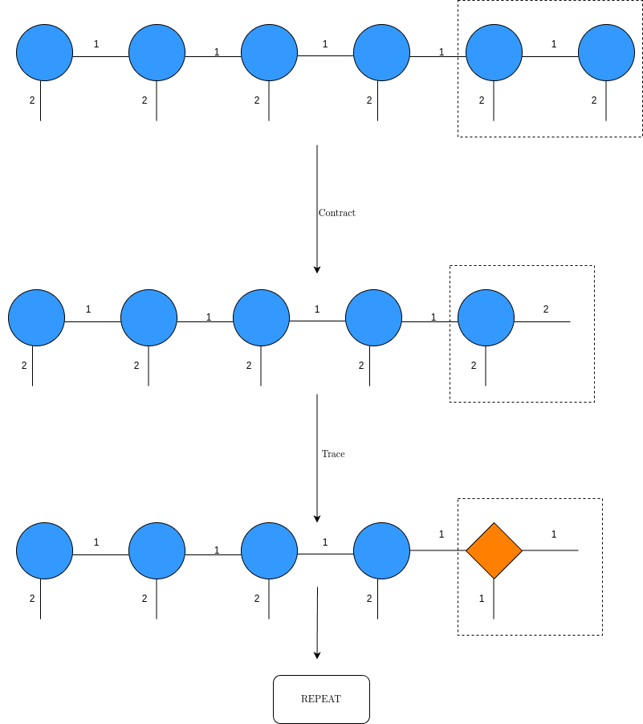
For each bath spin, do the relevant matrix multiplication and then take a trace of the multiplied matrix, then repeat until you get only one node to get the relevant density matrix properties that you want.
This code snippet is from calc_rho.py :
def calc_rho(rin):
nlen = len(rin.nodes)
rho = np.dot(rin.nodes[0][0,0,:], rin.nodes[1][:,0,:])
rho = np.tensordot(rho, rin.nodes[2], axes=(0,0))
rho = np.tensordot(rho, rin.nodes[3], axes=(1,0))
rho = np.trace(rho, axis1=0, axis2=1)
for i in range(nbath-2):
rho = np.tensordot(rho, rin.nodes[2*i+4], axes=(0,0))
rho = np.tensordot(rho, rin.nodes[2*i+5], axes=(1,0))
rho = np.trace(rho, axis1=0, axis2=1)
rho = np.tensordot(rho, rin.nodes[nlen-2], axes=(0,0))
rho = np.dot(rho, rin.nodes[nlen-1][:,:,0])
rho = np.trace(rho, axis1=0, axis2=1)
return rhoPropagation
RK-4
TEBD
DMRG
TDVP
Dissipative Dynamics in MPS
- Adding Lindblad operators to the MPS (Ref 2 has it).
Appendix A : Singular Value Decompositions (SVDs) and QR
See my notes on matrix factorisations. They explain what is an SVD and why we use SVD as opposed to any other matrix decomposition for MPS preparation.
Appendix B : Direct Products and Direct Sums (otimes and oplus)
See my notes on direct products and sums. They explain the logic behind some of the tensor operations and why the MPO we constructed has the form that it does.
Resources / To-Read
- My MPS Playlist
- Schollwoeck’s entire DMRG in the age of MPS
- MPS Construction for finite-T Mixed States
- Krylov subspace methods for MPS.
- TDVP paper and implement in very simple form
- Frank Pollman Lectures at BSS2023 (in the playlist) and lecture notes